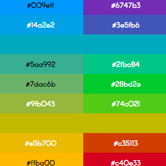
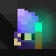
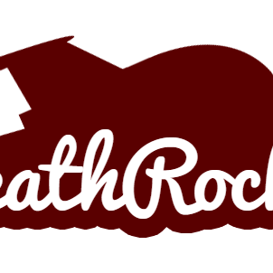
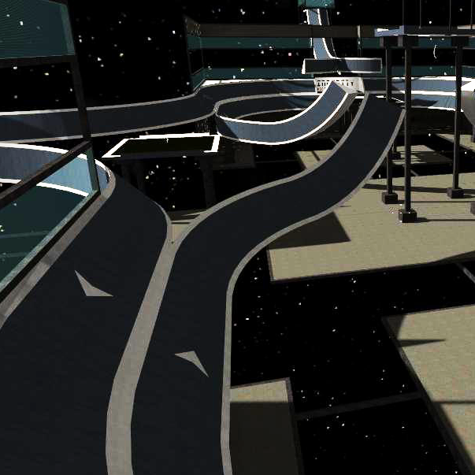

Spooky Dungeon
Current Project. Android/iOS progression based rogue-like. Move by swapping positions with objects.
Current - Built with: Unity, C#

colerp
RGB/HSL color interpolation utility for web developers.
2015 - Built with: JavaScript
Gap Cat
Android/iOS infinite runner. Jump between buildings, run as far as possible.
2014 - Built with: libGDX, Java
Gap Cat Score Servers
RESTful based score servers for Gap Cat.
2014 - Built with: Jersey, Java, AWS (EC2, RDS)
Final Circle
Ludum Dare 33 ("You are the Monster") compo entry. Top-down progression based melee combat. Balance morale/rage mechanics.
2015 - Built with: Unity, C#

Arthur and the Staff of Arbitrary Arrangement
Ludum Dare 32 ("Unconventional Weapon") compo entry. Spooky Dungeon precursor. Progression by swapping positions with objects.
2015 - Built with: libGDX, Java
Monogon
Ludum Dare 28 ("You Only Get One") compo entry. Level based platformer. Singular block-placing mechanic.
2014 - Built with: libGDX, Java

MegaDeathRocket
League of Legends enemy champion predictor. Guesses enemy picks based on target bans.
2014 - Built with: JavaScript, jsoup, Java
SimpleInfiniteParallax
Unity simple looping parallax utility.
2015 - Built with: C#

surf_infinity
Counter-Strike: Source map made for the surf mod.
2008 - Built with: Hammer Editor